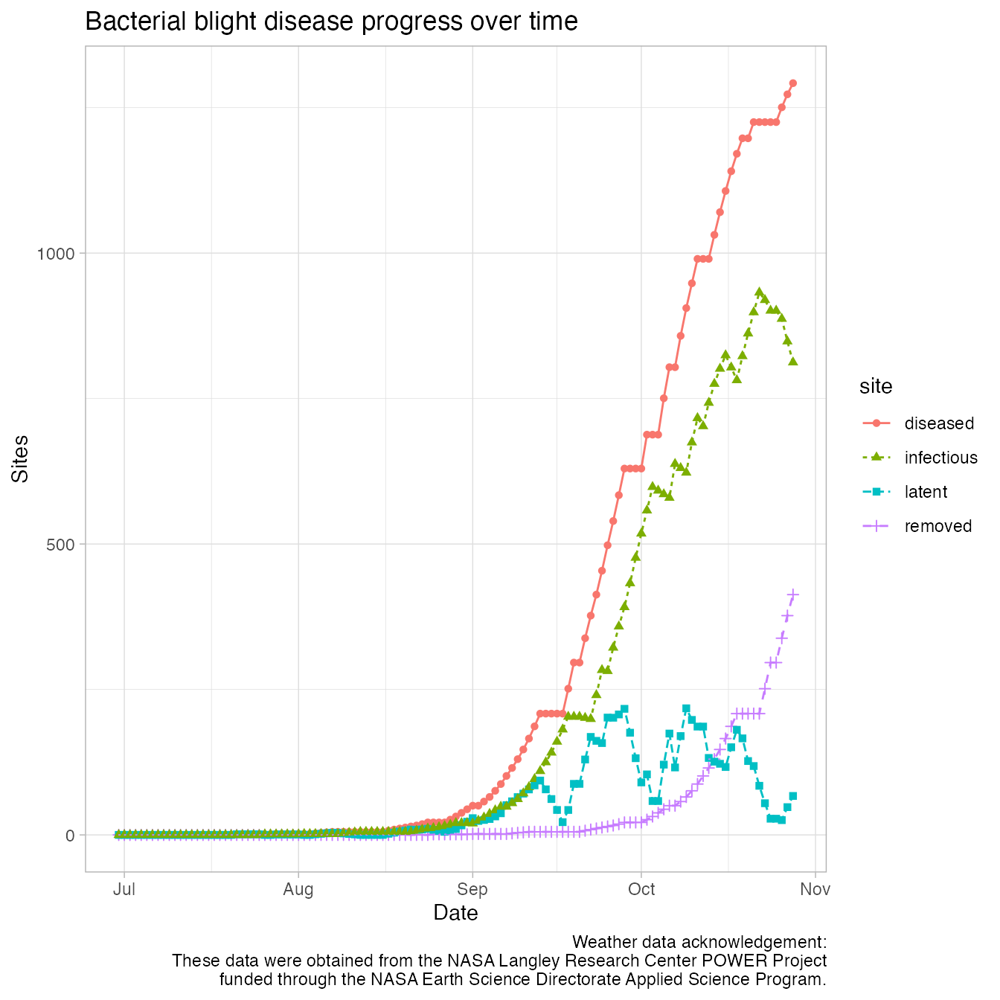
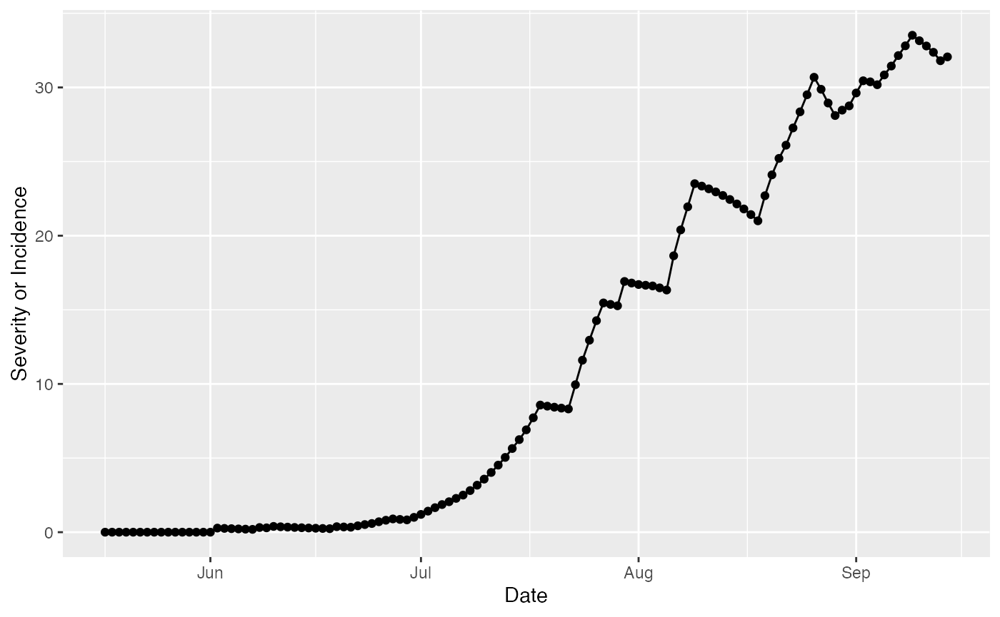

bb <- predict_bacterial_blight(wth, emergence = "2000-05-18")
summary(bb)## simday dates sites latent
## Min. : 0 Min. :2000-05-17 Min. : 100.0 Min. : 0.0000
## 1st Qu.: 30 1st Qu.:2000-06-16 1st Qu.: 944.9 1st Qu.: 0.7693
## Median : 60 Median :2000-07-16 Median :1680.1 Median : 30.9778
## Mean : 60 Mean :2000-07-16 Mean :1517.2 Mean : 51.6364
## 3rd Qu.: 90 3rd Qu.:2000-08-15 3rd Qu.:2177.9 3rd Qu.: 83.9667
## Max. :120 Max. :2000-09-14 Max. :2433.0 Max. :215.1669
## infectious removed senesced rateinf
## Min. : 0.00 Min. : 0.00 Min. : 0.0 Min. : 0.00
## 1st Qu.: 2.52 1st Qu.: 0.00 1st Qu.: 115.4 1st Qu.: 0.00
## Median : 93.72 Median : 2.52 Median : 645.3 Median : 1.00
## Mean :230.18 Mean : 97.91 Mean : 841.1 Mean :10.58
## 3rd Qu.:497.27 3rd Qu.: 96.24 3rd Qu.:1422.1 3rd Qu.:17.90
## Max. :640.76 Max. :689.32 Max. :2512.8 Max. :68.18
## rtransfer rgrowth rsenesced diseased
## Min. : 0.00 Min. : 9.688 Min. : 1.000 Min. : 0.00
## 1st Qu.: 0.00 1st Qu.:27.175 1st Qu.: 9.449 1st Qu.: 2.52
## Median : 0.00 Median :31.123 Median :19.085 Median : 176.67
## Mean :10.12 Mean :40.871 Mean :20.869 Mean : 379.72
## 3rd Qu.:17.90 3rd Qu.:56.601 3rd Qu.:25.332 3rd Qu.: 689.32
## Max. :68.18 Max. :79.323 Max. :82.692 Max. :1271.72
## severity
## Min. : 0.0000
## 1st Qu.: 0.3342
## Median : 6.9052
## Mean :11.7008
## 3rd Qu.:22.7135
## Max. :33.5192
dat <- pivot_longer(
bb,
cols = c("diseased", "removed", "latent", "infectious"),
names_to = "site",
values_to = "value"
)
ggplot(data = dat,
aes(
x = dates,
y = value,
shape = site,
linetype = site
)) +
labs(y = "Sites",
x = "Date") +
geom_line(aes(group = site, colour = site)) +
geom_point(aes(colour = site))
dat <- pivot_longer(
bb,
cols = "severity",
names_to = "severity",
values_to = "value"
)
ggplot(data = dat,
aes(x = dates,
y = value)) +
labs(y = "Severity or Incidence",
x = "Date") +
geom_line() +
geom_point()